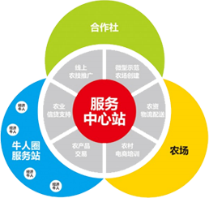
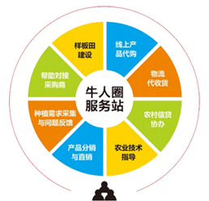
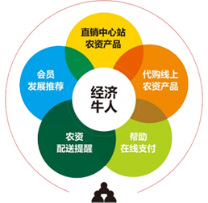
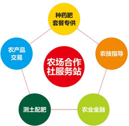

基于农业大数据、构建农业+互联网+金融生态圈
牛我我：种业（品种+行业明星品种）+药肥+农机+富富圈P2P+农业保险、期货+农产品
O
2
O
- 线
上 - 线
下
- 在线服务平台销售服务管理系统+实时在线专家服务
- 互联网金融平台供应链金融+农业保险+期货
- 线上销售平台公众号商城+种植解决方案
- 线下销售平台牛我我服务中心站、牛人圈服务站
- 技术服务平台微型示范农场、产需对接、农技服务
- 客户管理平台渠道管理、牛人管理、会员管理、VIP
- 金融服务平台贷后管理、种植管理、粮贸资源整合
- 服务中心站
- 牛我我合作种植项目体验中心
- 经济牛人的服务中心
- 
- 提供六位一体的区域运营方案
- 牛人圈
- 乡村名流的俱乐部
- 经济牛人的创业园
- 
- 打造种管收一体化丰收解决方案
- 经济牛人
- 传统销售的经纪人
- 牛我我合作种植项目好帮手
- 
- 为用户提供面对面、点对点差异化服务
- 农场/合作社
- 牛我我为您轻松种地
- 当助手 做管家 筑后盾
- 
- 为农场合作社提供定制化服务
- 2个基本点
-
农业增产增收
股东利益最大化
-
此平台旨在服务农民，目的就是带动农民脱贫、带领农民致富、提升区域经济发展， 更是平台存在社会价值及进一步发展的原动力和基本点
商业化运作的目的是确保股东利益，只有保证股东收益前提下才能调动各方面的积 极性。也只有保证股东利益，才能吸引战略投资者。确保股东利益是平台一切商业化运作的基本点
- 3个产业布局
-
以传统农产品种植为第一产业布局
以传统农产品加工为第二产业布局
以农业金融、互联网、农资有效供 给等为第三个产业布局
-
完善的产业布局是商业化运作的根本保证，只有实行三产联动，让三产带动二产、 二产带动一产，达到产融结合，才能让平台运转起来，让价值链中间的关键因素 得以传递和运转
产业布局越完善，商业化的根基越牢靠，利润点越多，为股东合作社创造的价值越 大。整个商业化平台的抗风险能力也就越强
- 4个发展立足点
-
立足于农业增产、农民增收、农村繁荣
立足互联网+农业+金融+资源于平台打造
-
立足于产业联盟，优势协同、资源互补
立足于资本运作，合作方共赢
选择我们的理由
- 专业
- 专业的农技服务专家团队
- 专业的农业金融实操团队
- 专业的农资销售精英成员
- 专业的农资产品研发机构
- 专注
- 专注农业渠道建设30年
- 专注农业品牌建设30年
- 专注农资产品研发30年
- 专注农业生产全产业链
- 创新
- 农资经营模式创新
- 互联网+农业创新
- 全产业链模式创新
- 种植产业化模式创新
- 单质化粮贸模式创新
- 引领
- 农业产业化模式引领
- 农资营销模式引领
- 农技服务模式引领
- 农业金融模式引领
- 农业生态圈模式引领